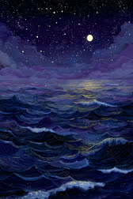

スケールが大きく、何より自由を愛する人。一つの場所、一つの正解に留まることが性に合わないでしょう。常識の枠を平然と越えていく発想力と行動力は、周りには真似のできない魅力よ。ただね、海は満ちれば引くもの。その気まぐれな潮の満ち引きが、「あの人は掴めない」という不信に変わることもあるはずよ。器の大きさは本物。だからこそ惜しいの、一つの場所に腰を据えてやり抜いた経験の少なさが。流れ続けるだけの水は、何も満たせないわ。一度でいいから、あなたの全部を注ぎ込む港を決めてみなさい。
仕事では、決まりきった毎日より、変化と刺激のある環境で生きるタイプ。複数の物事を同時に回す器用さと、常識外れの発想力が武器よ。ただし、軌道に乗る手前で飽きて手放す癖が最大の敵。始めたことを最後まで見届けた数だけ、あなたの信用は積み上がるの。
恋愛では、束縛が何より苦手な自由人。追われると引き、離れられると追いたくなる困った性分でしょう。相手は「本気なの?」と不安なはずよ。自由でいたいなら、その分、言葉の錨を打ちなさい。「大丈夫、離れない」の一言が、あなたの自由を守るのよ。
人間関係では、誰とでも気さくにやれる社交性の持ち主。人脈は海のように広がるけれど、深入りは巧みに避けているでしょう。特定の誰かに寄りかかることを、無意識に恐れているのよ。でもね、どんな大海にも深いところがあるように、あなたの深部を知る人が一人もいないのは寂しすぎるわ。信頼できる相手には、浅瀬より奥へ招き入れなさい。
商社や海外と行き来する仕事、マーケティングや新規事業の立ち上げ、それに旅や情報を扱うメディアの仕事が向いているわ。岸に縛られない大海は、国境も業界の垣根も軽々と越えていくの。複数の案件を同時に回すフリーの働き方も、あなたの水に合うわよ。
あなたの伸びしろは「帰る港を持つこと」よ。海は自由だけれど、どこにも錨を下ろさない船は嵐の夜に流されるだけなの。あなたに要るのは束縛じゃなくて、戻る場所よ。毎朝の小さな習慣でも、何があっても続ける一つの仕事でも、離れない人間関係でもいいわ。動かない一点を持つと、あなたの広さは散漫ではなく航路になるの。飽きたと感じたときこそ、捨てる前にもう一往復してごらんなさい。二周目の海にだけ見える景色があるのよ。
広さは十分。次は深さよ。一つの港に、錨を下ろしてごらんなさい。
これは日主(生まれた日の干)だけを見た基本タイプです。実際の鑑定では、生年月日から算出した年柱・月柱・時柱も加味して、より詳しい結果が出ます。あなたの本当の鑑定を、無料でどうぞ。
🔮 他の診断もチェックする